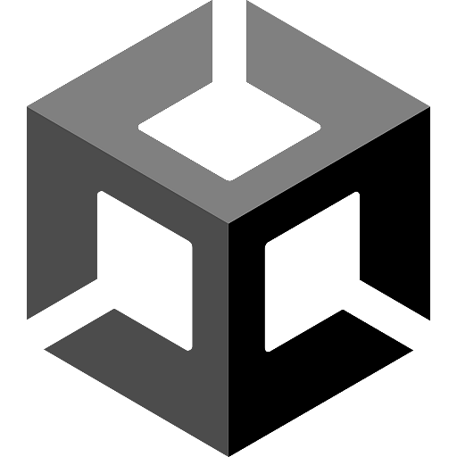
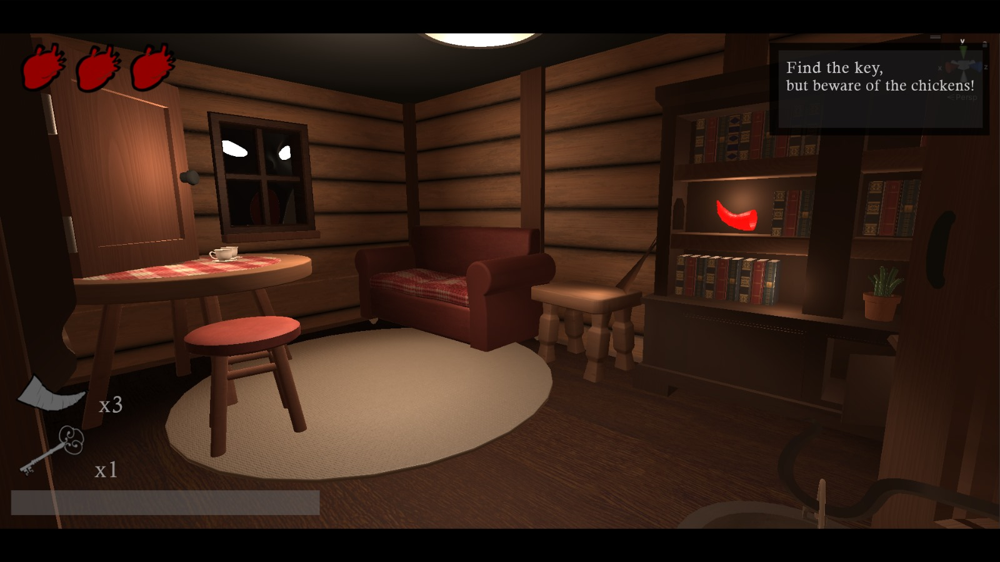
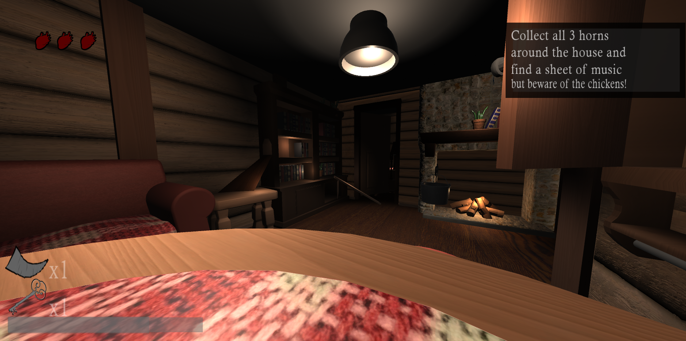
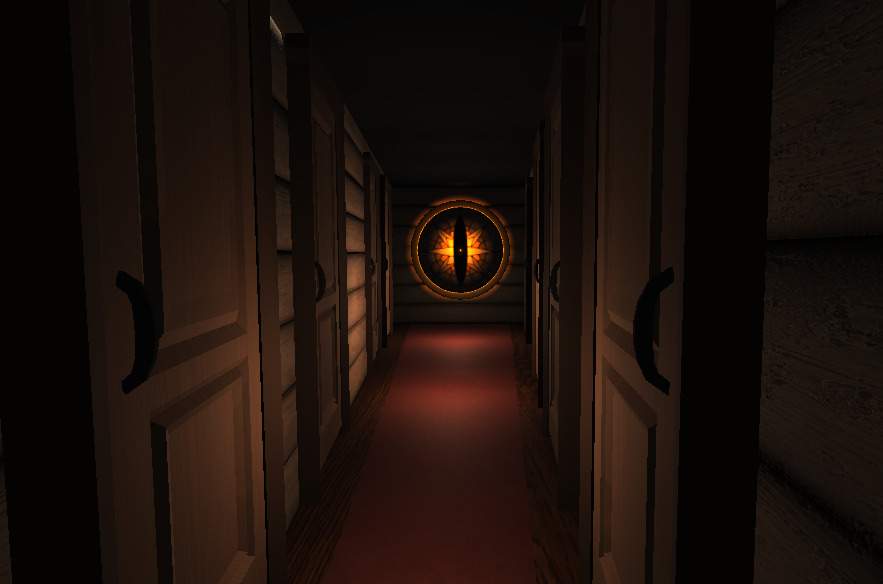

An horror platformer about Babayaga!

Made with Unity!

Made with Unity!



My first project where I worked in a team as a coder. My team consisted of 3 coders and 3 game artists. We all chose to make a 3D platformer that needed to be based on the legend of Baba Yaga. Before we started making the game, we wanted to get a concrete version of the storyline and outline what parts we needed for the game. We were also looking across different platforms like Pinterest for inspiration for the different kinds of vibes we wanted for the game. We had a deadline of approximately 8 to 9 weeks to present it to our teachers.
My part of the project started with making a pickup system where if you pick up a key from the ground, it could then open a closed door. After a while, I made a dev area to test the key pickup feature and it worked. The next part was making a pause menu for the game. Making the pause menu was easy, but it had a lot of glitches. Some of my classmates who worked on the project wanted to add a save system to the game. That save system was going to be added alongside the pause menu, but after some discussing we decided it would not be added. I finished making the pause menu, and a game artist in our project made some cutscenes for the game, which I eventually added into the game. I needed to work in Premiere Pro to add the cutscenes into Unity, which eventually worked. After the cutscenes, I started making a rough placeholder for the main menu, but after some time I got the art assets to add into the main menu. I checked in Trello for some more features to add, but all of them were already done, so I took some time to make a trailer for the game!